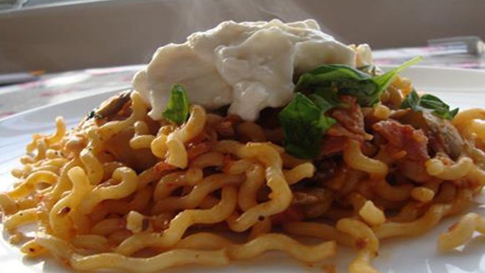

<!--
 Name:Neville Zou
 Student Id:
-->
<div class="pages">
<div data-page="projects" class="page no-toolbar no-navbar">
   <div class="page-content">
      <!--top header-->
      <div class="navbarpages">
         <div class="nav_left_logo"><a href="index.html"></a></div>
         <div class="nav_right_button">
		 <!--A link to Open Main Nav-->
            <a href="menu.html"></a>
			<!--A link to go back to Previous Page-->
            <a href="food-menu.html"></a>
         </div>
      </div>
	   <!--top header-->
      <div id="pages_maincontent">
           <!-- the header information of the page -->
         <h2 class="page_title">Our Recepie</h2><!-- heading tag-->
         <div class="post_single">
		  <!--Recipe Image And title-->
            <div class="featured_image">
               <!-- image tag for diplay image in browser-->
               <div class="post_title_single">
                  <h2>Bacon and Mushroom Fusilli Lunghi with Lemony Ricotta </h2>
               </div>
               
            </div>
			 <!--Recipe Image And title-->
			 <!--Recipe Detail-->
            <div class="page_content">
               <div class="entry">
                  <ul class="simple_list"><!-- unorder list-->
                     <li> Cook the pasta in a large pan of salted boiling water according to packet instructions.
                        Meanwhile, fry the onion in a large frying pan over a medium heat in a swig of olive oil until soft and golden.
                        Increase the heat and add the chopped bacon and continue cooking for 2 mins.
                     </li><!-- list Element-->
                     <li>Add the sliced mushrooms and cook over the high heat until soft and lightly golden.
                        Add the crushed garlic and cook for a few seconds (Take care not to burn).
                        Add the Lemon Zest, Sun-dried Tomato Purée and remaining white wine. Continue to cook until wine reduced by half.
                     </li>
                     <li>Combine the Ricotta, 2 Tbs of parmesan and the Lemon Juice.
                        Drain the pasta reserving a cup of the pasta water.
                        Combine the pasta with the Mushroom Bacon Mixture and add a little of the cooking water to loosen the mix. Toss to combine. Season to taste (Bacon is salty so I found adding salt unnecessary).
                     </li>
                     <li>Serve the pasta with a grating of Parmesan, generously scattered torn basil leaves and a good dollop of the Lemony Ricotta.
                        This is quite a quick process once the cooking begins so you will need to prepare, chop and measure all ingredients to begin with. It should really serve 6 (normal people) but in my family it would feed 4 super hungry adults!
                     </li>
                  </ul>
               </div>
            </div>
			<!--Recipe Detail-->
         </div>
      </div>
   </div>
</div>